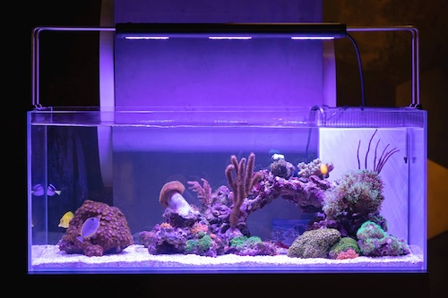
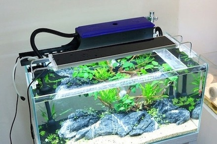
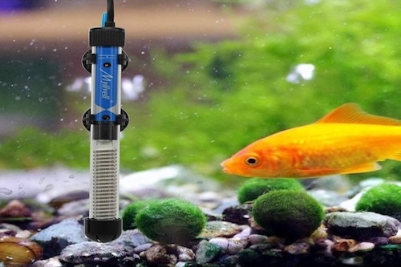
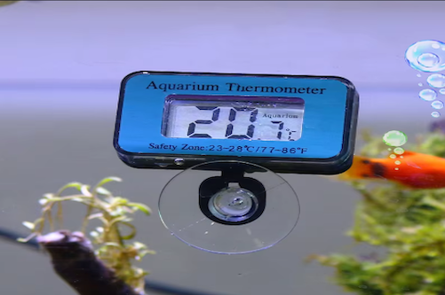
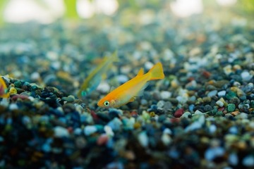
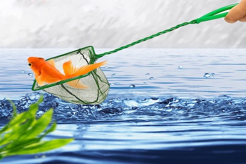
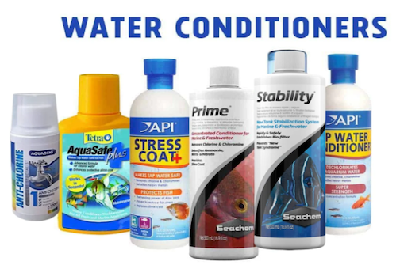
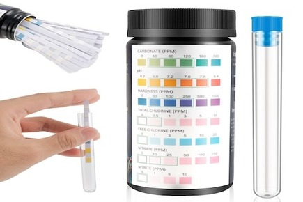
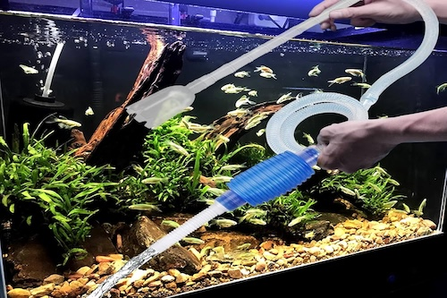
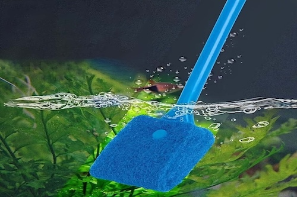

Fish Tank Maintenance
Essential Equipment for Your Aquarium: Discover Key Maintenance Gear to Keep Your Fish Tank Healthy and Beautiful! Explore our curated selection of products linked for easy shopping, ensuring your aquatic environment thrives.

Light
Function: Bright lighting is the key to seeing all that goes on in your aquarium and brings out the colours of your fish. It also helps the growth of aquarium plants.
Recommended: Aquarium LED Lights are great options as they are low cost and much cooler.

Filtration System
Function: Filtration systems keep the water quality clean to maintain your fish’s health.
Recommended: A Power Filtration System would be best for your your aquarium.

Heater
Function: A heater is to maintain optimum temperature for fishes according to their species.
Recommended: Submersible Aquarium Heaters are an excellent choice.

Thermometer
Function: Thermometers provides an accurate measurement of aquarium water temperature.
Recommended: Waterproof thermometers definitely work best.

Subtrate
Function: Subtrates are mainly for aesthetic purposes but also acts as a site for beneficial bacteria to grow and break down the waste products produced by fishes.
Recommended: Small and Smooth Subtrate is an all time favourite.

Fishnet
Function: Fishnets are to catch and remove fish along with removing any debris or algae found in the tank.
Recommended: Get more than one, preferably medium-sized, good quality nets.

Water Conditioner
Function: Water conditioners take care of chlorine, ammonia, and heavy metals. This is because water must be dechlorinated before being added to a fish tank. So, be sure to use it when filling the tank or during water changes.
Recommended: All types of aquarium water conditioner are suitable for use.

Water Test Kits
Function: These test kits are to test the water in newly set water aquarium for ammonia, nitrite, pH, nitrate, hardness, alkalinity and chlorine.
Recommended: Multi test strips are great for beginners as they are more convenient.

Siphon
Function: Siphons are used to vacuum the gravel and do water changes. They clean waste off the bottom of the tank while removing water for partial water change.
Recommended: A Siphon vacuum is most effective.

Algae Scrubber/Magnet
Function: Algae scrubbers/magnets are to clean algae off the inside of the aquarium.
Recommended: Algae scrubbers are commonly used but algae magnets are definitely more hassle-free.